01 / FAMILIEN
Kinder und Angehörige
Alltagsgegenstände, Lebensmittel, Schulmaterial und Momente gewöhnlicher Freude.
Wir sind ein kleines Team. Wir hören zu, organisieren Hilfe und bringen sie persönlich zu den Menschen – auch wenn der Weg schwierig wird.
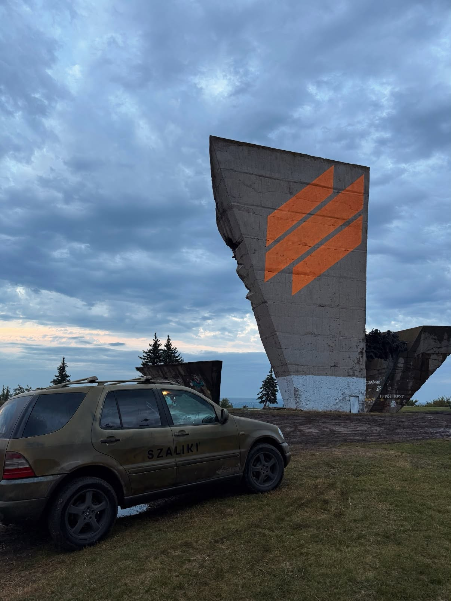
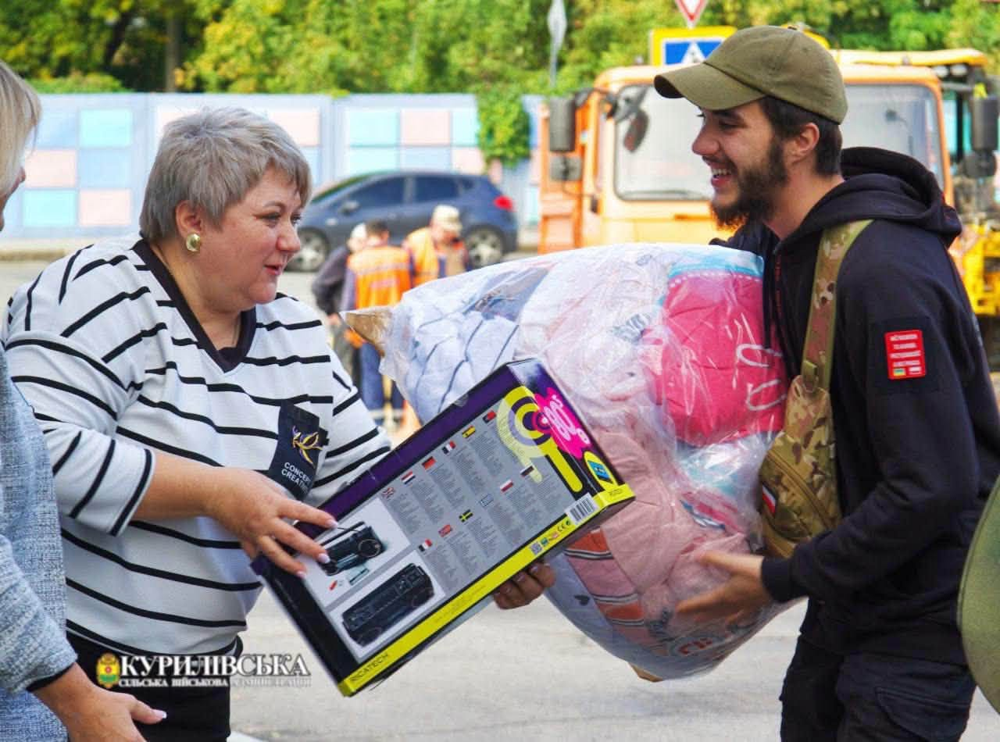


SZALIKI ist ein gemeinnütziger Verein. Seit Beginn des russischen Angriffskriegs gegen die Ukraine organisieren wir humanitäre Hilfe. Wir sprechen vor Ort mit den Menschen, fragen nach ihrem tatsächlichen Bedarf, packen das Nötige ein und fahren los.
Wir reden nicht aus der Ferne über den Krieg. Wir sprechen über Begegnungen, den Alltag und kleine Gesten, die dir helfen, einen schwierigen Tag zu überstehen.
Entdecke unsere Geschichten →Wir passen die Hilfe an Menschen und Situationen an. Erst reden wir, dann handeln wir.
Alltagsgegenstände, Lebensmittel, Schulmaterial und Momente gewöhnlicher Freude.

Unterstützung für ältere und blinde Menschen, abgestimmt auf ihre Bedürfnisse.

Wir haben bereits zwei Krankenwagen gekauft und insgesamt drei Krankenwagen in die Ukraine gebracht.
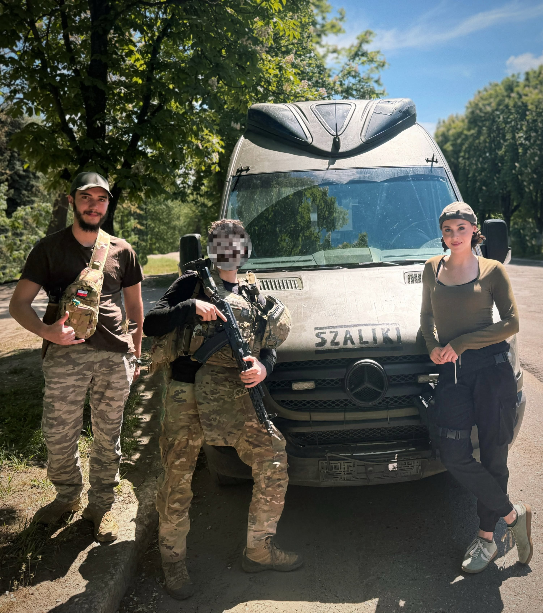
Wir bieten denjenigen, die in der Ukraine dienen, die nötige Unterstützung.
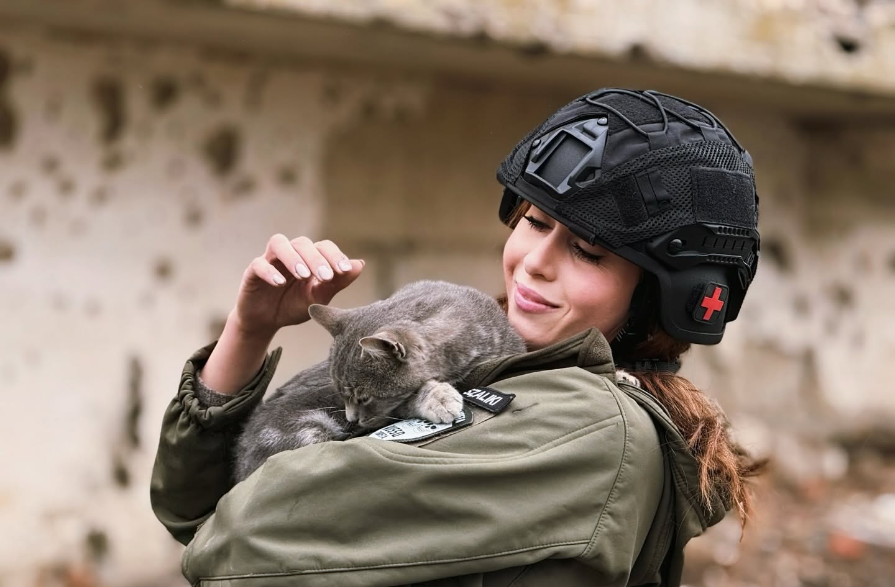
Nahrung und Unterstützung für Menschen, die sich trotz des Krieges um ihre Tiere kümmern.
Wir identifizieren uns mit der humanitären Hilfe und bleiben ihrem Grundziel treu: Leben retten und Leid lindern. Wir unterstützen Soldaten auch, weil sie Zivilisten schützen und evakuieren.
Diese Beziehung funktioniert in beide Richtungen. Soldaten helfen uns, Menschen mit Hilfe zu erreichen, und wir unterstützen sie bei Aktivitäten, die Leben schützen. Der gemeinsame Nenner ist die Sorge um die Menschen und ihre Sicherheit.

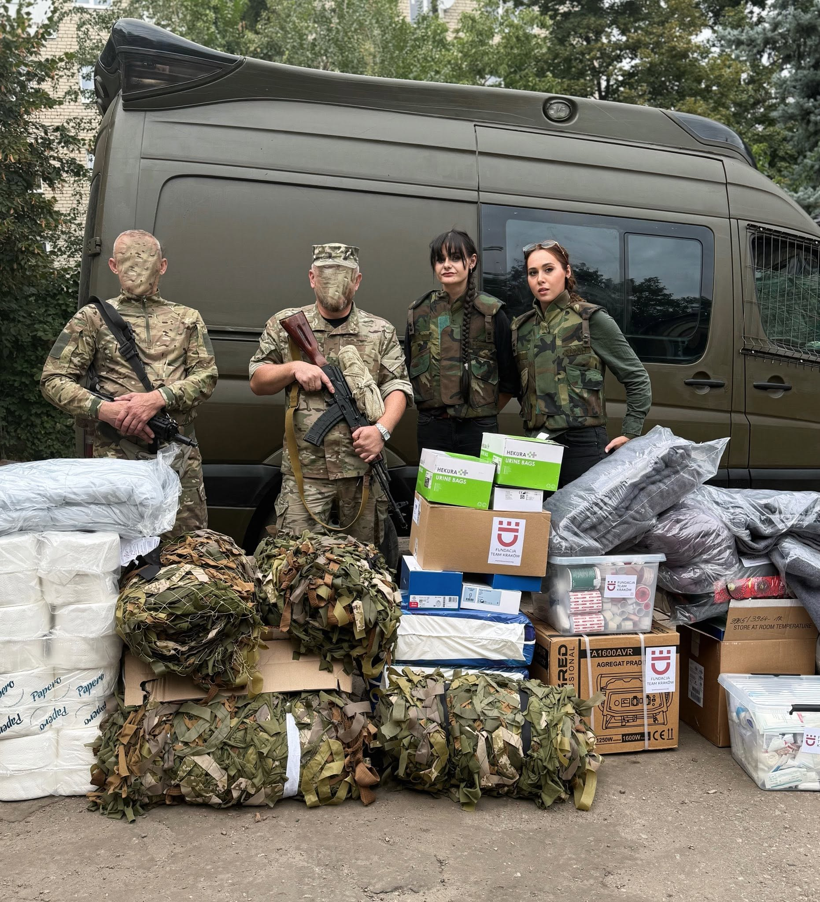
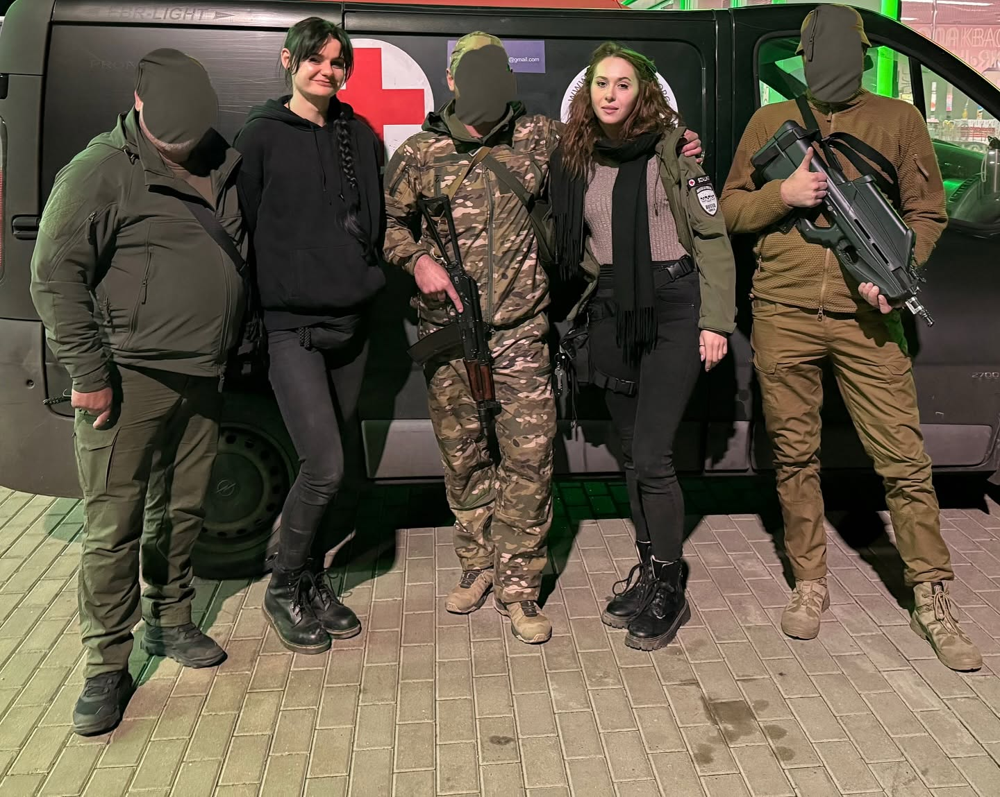


Man kann sich nicht auf alles vorbereiten. Es ist schwierig, einen kühlen Kopf zu bewahren, wenn Explosionen in der Nähe sind – das wissen wir aus eigener Erfahrung. Versuch dann, dich nicht von der Angst lähmen zu lassen und konzentriere dich auf den nächsten sicheren Schritt: einen sicheren Ort zu erreichen.
Folge zunächst den örtlichen Ankündigungen und wähle die angegebene, bewährte Unterkunft. Wenn du sie nicht erreichen kannst, such nach einem soliden, unbeschädigten Gebäude und einem Raum ohne Fenster. Dies könnte ein geeigneter Keller sein; Wenn es keinen sicheren Zugang dazu gibt, wähle einen Ort, an dem du durch mindestens zwei feste Wände vom Außenraum getrennt bist. Das ist nur eine Notlösung und bietet bei einem direkten Treffer keinen Schutz.
Vorbereitung hilft. Wenn es darauf ankommt, konzentriere dich auf den nächsten sicheren Schritt.
Sicherheitsratgeber →Fotos von Reisen, Lieferungen und Momenten, die die alltäglichen Aktivitäten der SZALIKI ausmachen.


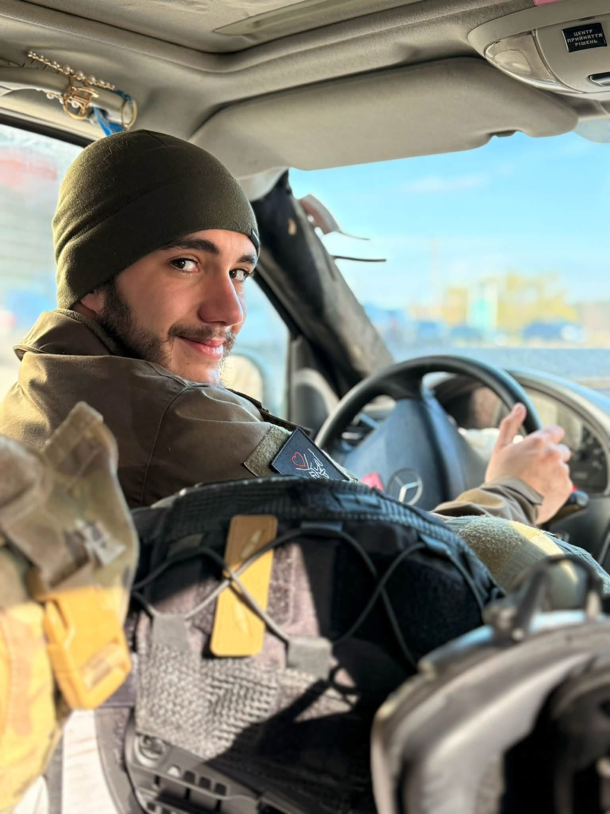

Gemeinsamen Spaß, Süßigkeiten, Notizbücher und gemeinsam verbrachte Zeit.

Zuerst hören wir zu. Dann suchen wir gemeinsam nach einer Möglichkeit zu helfen.

Spenden, Packen und ehrenamtliche Arbeit bilden eine Gemeinschaftsleistung.
Hinter jedem Weg stehen Menschen und Organisationen, die die gemeinsame Anstrengung seit Jahren unterstützen.

Das Deutsche Rote Kreuz hat uns von Beginn unserer Aktivitäten an unterstützt. Diese Zusammenarbeit hilft uns, Hilfe dort zu bekommen, wo sie benötigt wird.

Dies ist unser engster Partner. Wir teilen ähnliche Werte, die Aufmerksamkeit für die Bedürfnisse der Menschen und die Überzeugung, dass wirksame Hilfe mit Zusammenarbeit beginnt.
Möchtest du unsere Aktivitäten als Partner unterstützen? Lass uns reden.
Es entstand auf Initiative der Freiwilligen Katarzyna Kubanek, die zuvor in Szaliki aktiv war. Es ist schön zu sehen, dass aus Gutem Gutes entsteht.
Er hat uns mehrfach bei großen Einkäufen unterstützt, wodurch wir die nötigen Dinge vorbereiten und weitergeben konnten.
Er hat unseren „SZALIKI Tank“ repariert – ein Auto, ohne das wir nicht dorthin gelangen könnten, wo Hilfe besonders benötigt wird.
Dank Frau Elena und gemeinsamen Werten erreichen wir mit Hilfe die Front. Was uns verbindet, ist die Sorge um die Menschen.
Wir danken diesen Partnern und vielen anderen tollen Menschen und Organisationen von ganzem Herzen. Dein Vertrauen, deine Freundlichkeit und deine konkrete Unterstützung sind Teil jedes Weges, den wir gemeinsam gehen können.
Deine Spende hilft uns, Fahrten und Hilfslieferungen zu finanzieren.
Wähle einfach die Unterstützung, die zu dir passt.
Verwendungszweck: Spende
Als gemeinnütziger Verein setzen wir jeden Złoty für konkrete Hilfe ein. Danke, dass du uns unterstützt.
Einfache Erklärungen von Konzepten aus humanitären Beziehungen und Aktivitäten. Kein Militärjargon, wo er nicht benötigt wird.
Erweitertes Wörterbuch öffnen →

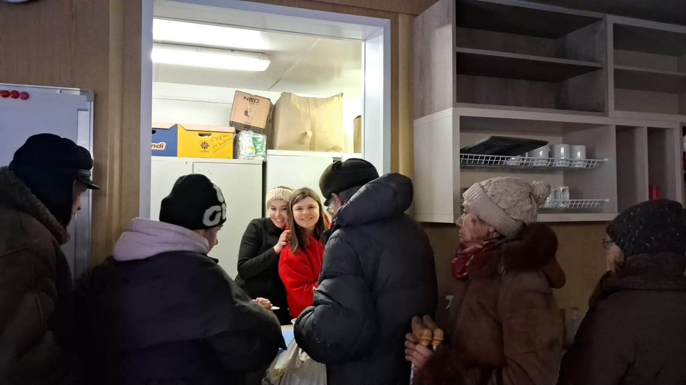
Standhafter Punkt (Ukrainisch пункт незламності) in Charkow war ein Ort, an den man kommen, heiße Suppe essen und sich aufwärmen konnte.
Während der Winterangriffe Russlands auf die Energieinfrastruktur blieben viele Menschen ohne Heizung, da die Temperaturen auf fast −30 °C sanken. Zusammen mit Caritas Spes Charkiw Wir kochten Suppen und hießen diejenigen willkommen, die eine warme Mahlzeit und einen Moment an einem sicheren Ort brauchten.
Dieser Ort wird manchmal als Hospiz bezeichnet, aber die Menschen, die dort leben, mögen diesen Begriff nicht. Für sie ist es einfach ihr Zuhause – der Ort, an dem sie leben.
Sie werden von Freiwilligen geleitet, die nah an den Bewohnern und ihren täglichen Bedürfnissen sind. Wir kommen dorthin, um zu helfen und Menschen zu treffen, denen nicht nur Unterstützung wichtig ist, sondern auch das Gefühl, zu Hause zu sein.


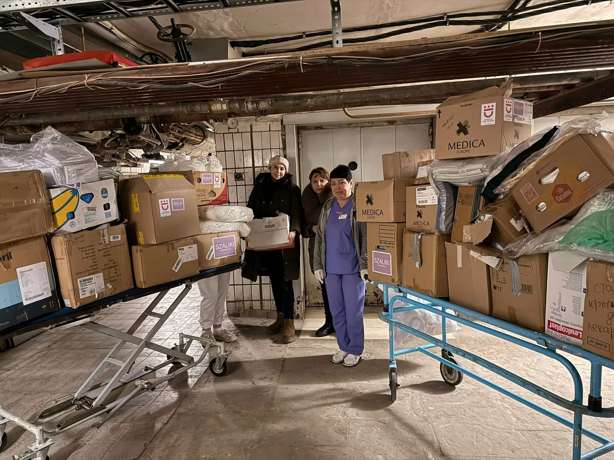
Wir unterstützen medizinische Einrichtungen in der Nähe der Front, indem wir benötigte Materialien und Hilfe bereitstellen. Wir erreichen auch unterirdische Krankenhäuser an der Front.
Hinter jedem dieser Orte stehen Menschen, die sich täglich unter schwierigen Bedingungen um Patienten kümmern.
Wir sind ein Team, das viel lacht, Witze macht und manchmal auch herumalbert. Es hilft uns, zusammen zu sein und zu helfen. Aber an gefährlichen Orten – insbesondere in extremen Momenten – musst du wachsam und besonnen bleiben.
Menschen sterben im Krieg. Deshalb beobachten wir aufmerksam die Umgebung, hören Menschen zu, die die Situation vor Ort kennen und unterschätzen die Gefahren nicht. Ruhe hilft, uns selbst, das Team und die Menschen, zu denen wir gehen, zu schützen.
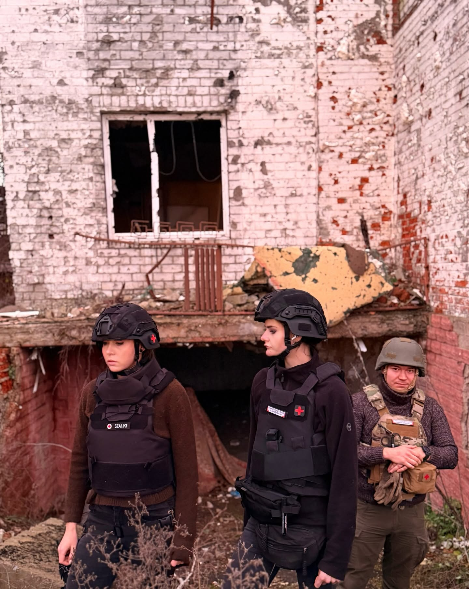

Krieg ist keine Geschichte mit klarem Ende. Zerstörung und Trauer gehen Hand in Hand mit der Sturheit, am nächsten Tag aufzustehen, Tee zu kochen und die Liebsten anzurufen. Hoffnung macht die Tragödie nicht ungültig. Manchmal ist es einfach so, dass Menschen trotz allem nicht aufhören, füreinander da zu sein.
Auch für uns ist es schwer. Aber nachdem wir gegangen sind, können wir nach Hause gehen. Für die Menschen, denen wir begegnen, sind diese Straßen und Wohnungen ein Zuhause – auch wenn sie beschädigt, gefährlich oder nicht mehr das bieten, was ihnen Sicherheit gegeben hat. Dieser Gedanke bleibt uns noch lange nach unserer Rückkehr erhalten.
Wir möchten nicht in ihrem Namen sprechen. Wir können kommen, zuhören und da sein. Und dann mit Hilfe zurückkommen.


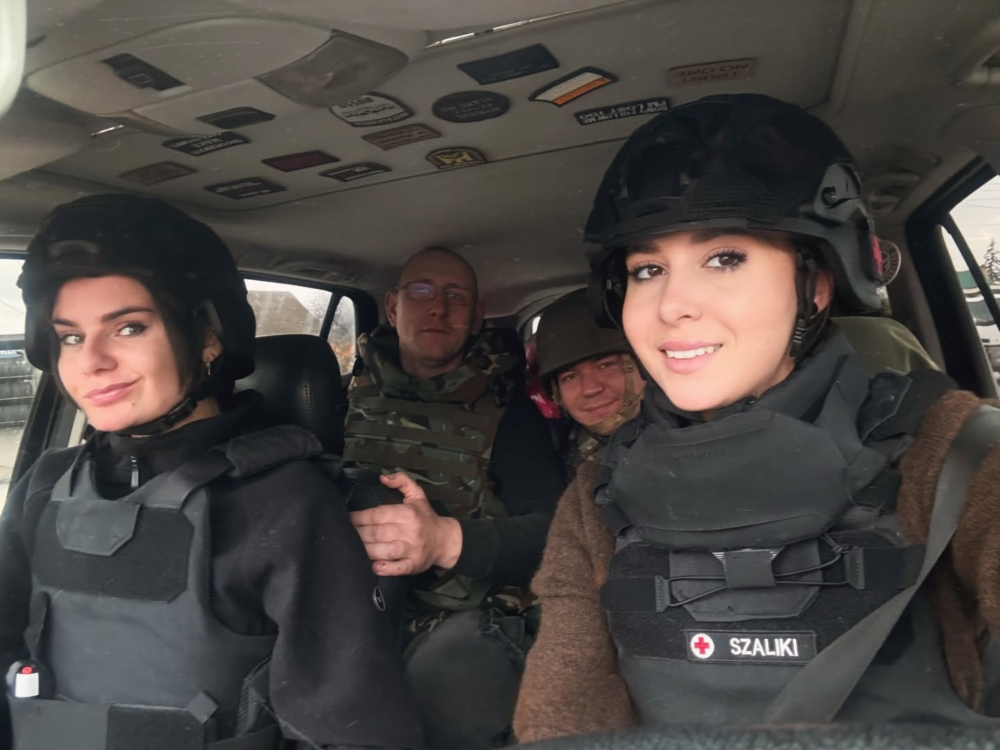

Auf Reisen gerät das, was im Alltag wichtig erscheint, schnell in Vergessenheit. Das neueste Telefon, eine Designerhandtasche, perfektes Make-up oder eine beeindruckende Figur sagen nicht aus, ob man sich auf jemanden verlassen kann.
Einen Menschen erkennt man daran, ob er die Müdigkeit anderer bemerkt, zuzuhören weiß, mithilft und dasteht, wenn ihm die Worte fehlen. In solchen Momenten entstehen Freundschaften, tiefe Bindungen und manchmal sogar Liebe. Es muss nicht benannt oder zur Schau gestellt werden, damit es echt ist.
Wir kommen mit Dankbarkeit für Menschen zurück, mit denen man man selbst sein kann – ohne sich zu verstellen und so zu tun, als wäre man immer stark. Am Ende zählt nicht das Aussehen, sondern das Herz.


Zu Beginn des Krieges berichteten Redaktionen aus verschiedenen Ländern über die Ereignisse in Przemyśl und in der Nähe der Grenze. Später erschienen Veröffentlichungen, die sich direkt den SZALIKI und den Menschen widmeten, die dieses Hilfsmittel geschaffen haben.
BBC Newsnight berichtete von der polnisch-ukrainischen Grenze und dem Bahnhof in Przemyśl, wo sich Flüchtlinge und Freiwillige trafen.
Sieh dir das BBC-Material an ↗Japan · Nippon TVDas japanische Fernsehen berichtete über die Arbeit von Freiwilligen, die Menschen helfen, die vor dem Krieg fliehen.
Sieh dir den Bericht an ↗YouTube · ŻycioRysyStanisław Rudowicz spricht über seine ehrenamtliche Erfahrung und Teamarbeit.
Sieh dir das Gespräch an ↗Deutschland · Schwäbische PostInterview mit Sarah-Johanna Hamera über Hilfe an der Grenze, erste Reisen und Menschen, die Unterstützung erhielten.
Artikel lesen ↗International · IFESDie Publikation beschreibt, wie sich Partner aus Deutschland und anderen Ländern zusammengeschlossen haben, um Hilfe und Lieferungen mit SZALIKI zu organisieren.
Lies die Publikation ↗Irland · RTÉDas Material über Polen als engen Verbündeten der Ukraine spricht auch die Entstehung von SZALIKI und der Hilfe an der Grenze.
Artikel lesen ↗Polen · Tarnowskie Góry InfoEin Gespräch über Missionen, Angst und Freude aus einfachen Gesten.
Gespräch lesen ↗Polen · GwarekBericht über SZALIKI, das Team und persönliche Hilfeleistungen für Menschen in der Ukraine.
Lies den Bericht ↗Ein Gespräch über Krieg, humanitäre Hilfe und die Kraft der Solidarität – aus der Sicht der Menschen, die diese Hilfe leisten.
Folge anhören ↗Beschreibung und Veröffentlichung in der Mediathek ↗
Im Studio sprachen wir über unsere Arbeit und humanitäre Hilfe. Wir hinterlassen neben dem Foto einen Link zur Scarves-Publikation.
Berichte und Veröffentlichungen ↗Radio ESKA – Action-Podcast · TVP Kattowitz – Live-Interview im Studio.
Wir werden Audio- und Videomaterial hinzufügen, wenn wir Zugriff auf archivierte Aufzeichnungen haben.
Die Fotos zeigen Drohnenschutznetze, unser Auto und zerstörte Häuser und Wohnblöcke.
Hier kam jemand nach der Arbeit zurück, fütterte das Kind, ordnete Blöcke. Jemand bereitete sich auf ein Date vor, jemand machte Hausaufgaben. Heute gab es zerbrochene Fensterscheiben, eingerissene Wände und Schutt. Das waren die Häuser von jemandem.


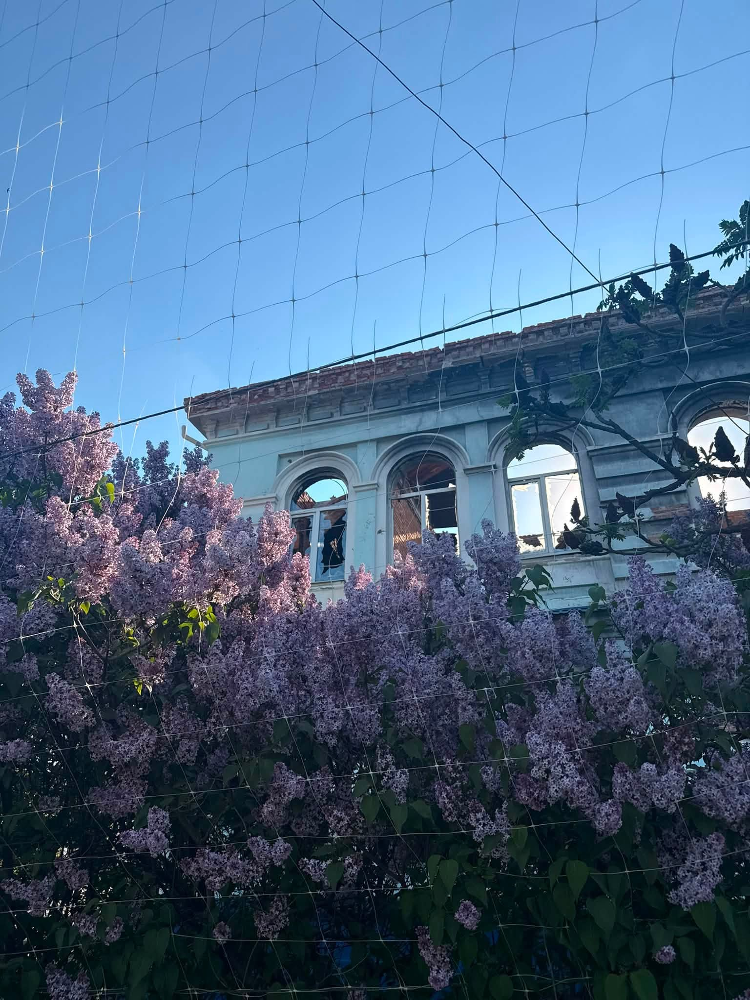
Während einer unserer Reisen suchten zwei russische Drohnen nach uns – jagten uns. Wir versteckten uns im Gebüsch und warteten darauf, dass die Gefahr vorüberzog. Es gab Zeiten, in denen wir einer Tragödie wirklich nahe waren.
Ein Einwohner von Cherson beschrieb eine solche Bedrohung als „Menschensafari“ – Jagd auf Menschen mit Drohnen. Dies ist ein Begriff aus zivilen Berichten, keine Redewendung.
Die Genfer Konventionen und das humanitäre Recht dienen dem Schutz der Zivilbevölkerung. Unterdessen dokumentierten die Vereinten Nationen russische Angriffe in besiedelten Gebieten, die gegen die Grundsätze dieses Gesetzes verstießen (Ergebnisse der unabhängigen UN-Untersuchungskommission zur Ukraine ↗). Wir dürfen nicht so tun, als sei das ein weit entferntes Problem.
Es geht nicht darum, aus Risiko einen Helden zu machen. Wir wollen ehrlich zeigen, wie unsere Reisen sind: schwierige Bedingungen, wenig Schlaf, provisorische Rastplätze und die ständige Notwendigkeit, auf sich und andere zu achten. Dies ist kein Camping- oder Wanderausflug.
Unsere Gruppe ist gut koordiniert, weil wir die Stärken, Schwächen und Grenzen des anderen kennen. Die Sicherheit aller hängt von Vertrauen, Ehrlichkeit und Verantwortung füreinander ab. Es erfordert auch, dass wir uns offenbaren und es direkt sagen, wenn etwas außerhalb unserer Möglichkeiten liegt.

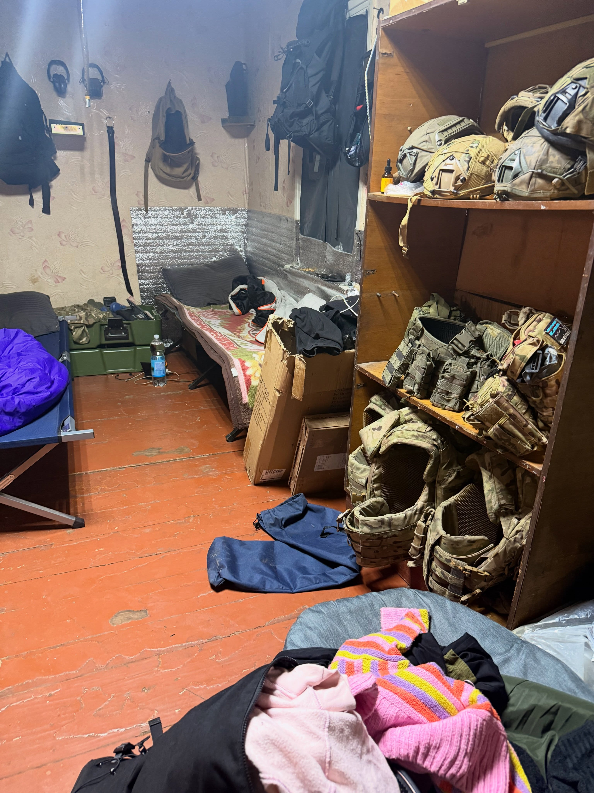

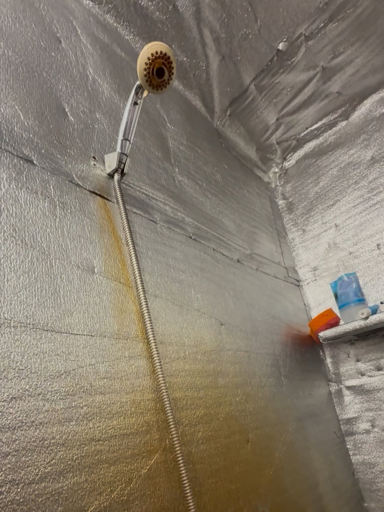
Wir haben Lebensmittel an Orte geliefert, die schwer und gefährlich zu erreichen sind. Wir halfen bei der Evakuierung von Tieren und fanden für einige von ihnen ein Adoptivhaus in Polen.
Die auf den Fotos zu sehenden Tiere aus Kramatorsk wurden bereits sicher entfernt. Das Foto mit der Katze und dem Helm wurde in einem Dorf in der Nähe von Charkow aufgenommen.
Du kannst diese Hilfe mit einer Spende oder einer Lebensmittelspende unterstützen. Schreib uns – wir ermitteln, was du gerade brauchst und wie wir es zu dir bringen können.


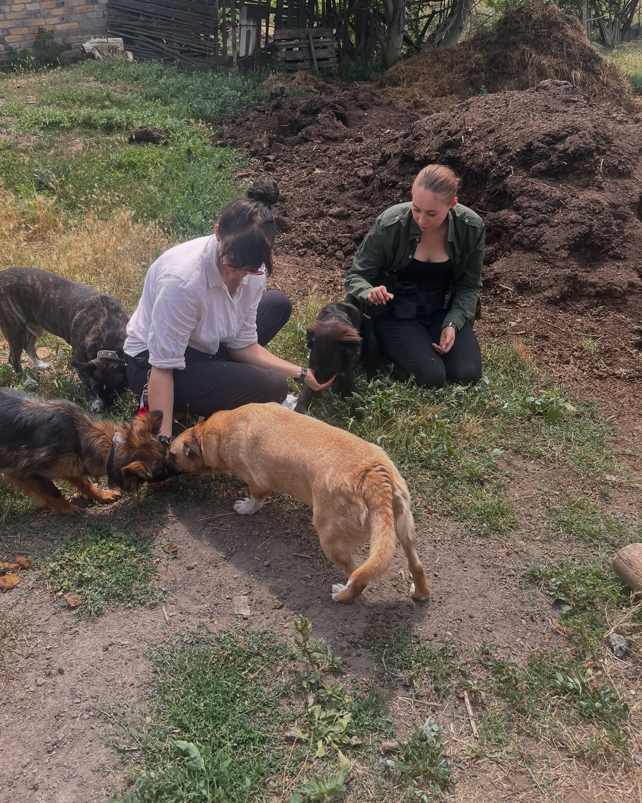
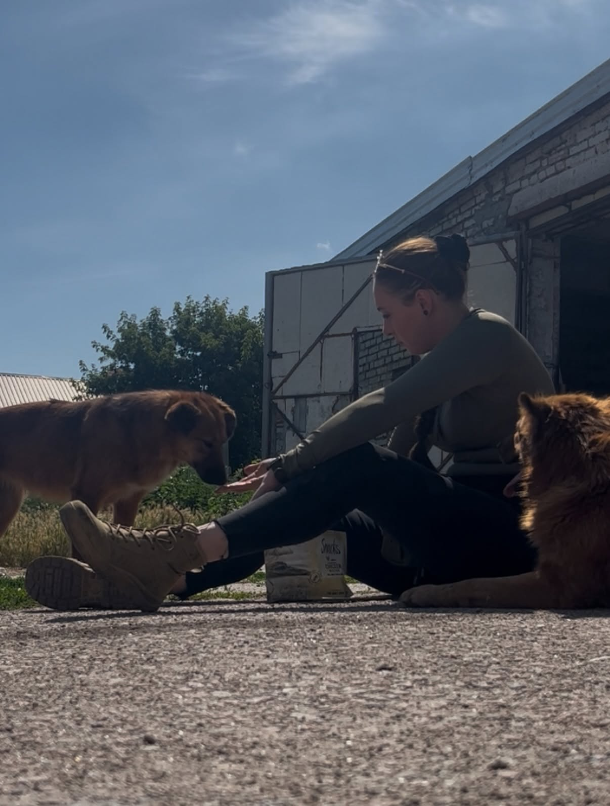


Als Polen von der Flut heimgesucht wurde, gehörten wir zu den Ersten, die Hilfe leisteten. Wir sind mehrmals mit humanitärer Hilfe dorthin zurückgekehrt. Wir unterstützen auch Notunterkünfte und lokale Kampagnen, auch solche, die sich an arme Menschen richten. Wir helfen dort, wo wir gebraucht werden – in der Ukraine und in Polen.